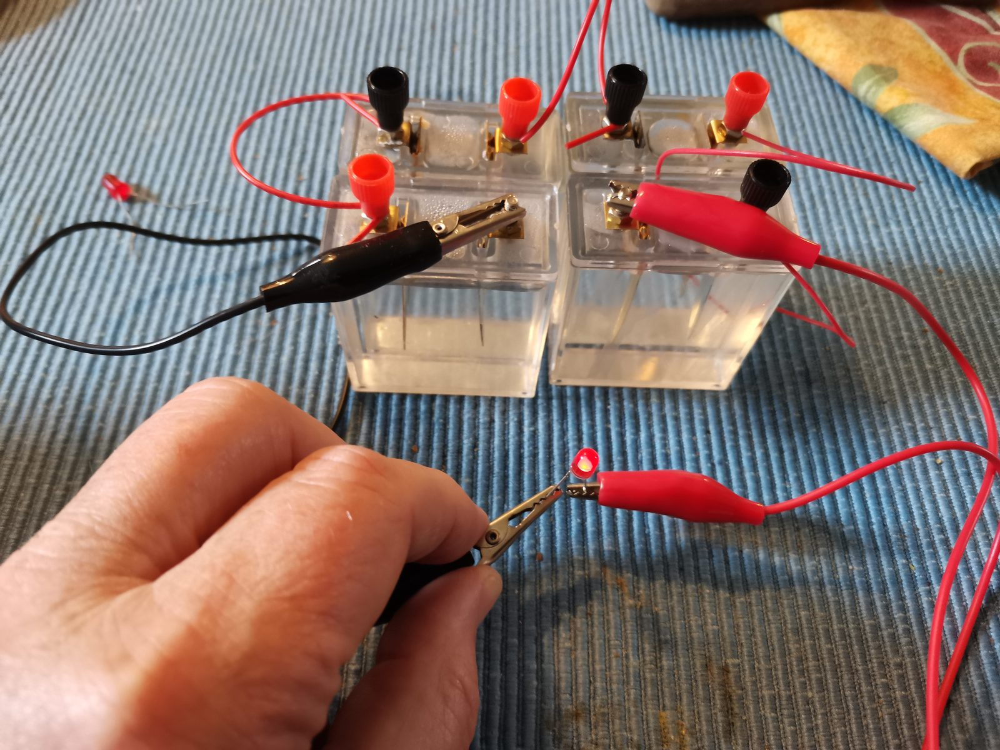
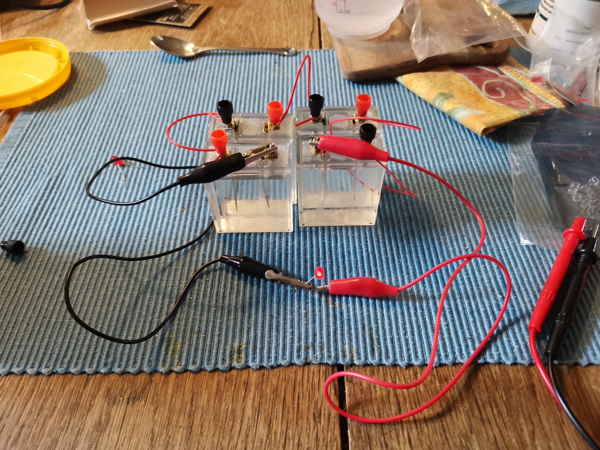
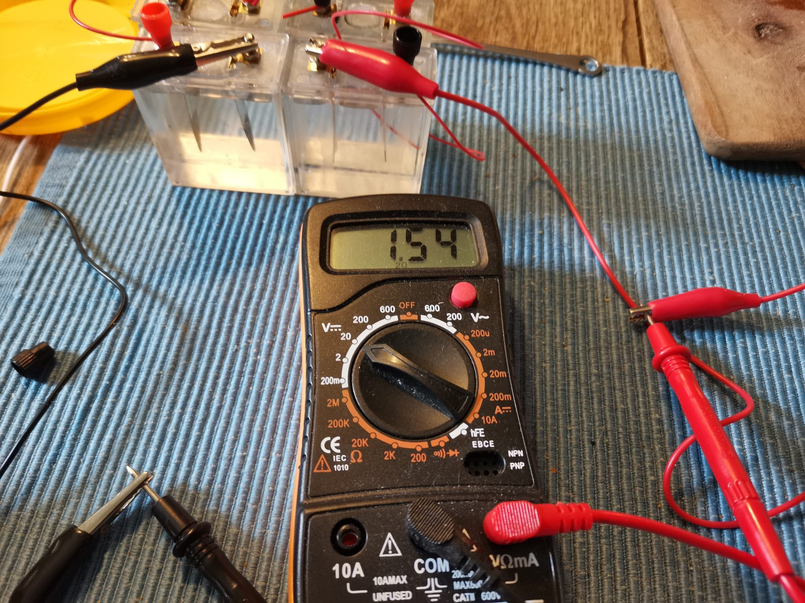

Fire gennemsigtige celler med saltvand, en zinkelektrode og en kobberelektrode i hver — og en rød lysdiode, der lyser. Det hele bygget på et køkkenbord. Tryk på kontakten og se, hvad der sker inde i cellen.
Hver celle er en lille gennemsigtig plastbeholder fyldt med saltvand. I beholderen står to elektroder: et stykke zink (det grå søm) og et stykke kobber. Cellerne forbindes i serie med ledninger og krokodillenæb — pluspol til minuspol — og til sidst sættes en rød lysdiode ind i kredsløbet.



Det ligner legetøj, men det er præcis samme princip som i Alessandro Voltas berømte voltasøjle fra år 1800 — verdens første batteri, bygget af zink- og kobberskiver med saltvandsvædet pap imellem. Med fire celler på et køkkenbord gentager vi altså et af fysikhistoriens vigtigste eksperimenter.
En galvanisk celle omdanner kemisk energi til elektrisk energi. Drivkraften er, at zink meget hellere vil afgive elektroner end kobber.
Ved zinkelektroden (anoden, minuspol) går zinkatomer i opløsning som ioner og efterlader to elektroner i metallet:
Elektronerne løber gennem den ydre ledning — og gennem lysdioden — over til kobberelektroden (katoden, pluspol). Her er det vigtigt at bemærke: kobberet deltager ikke selv i reaktionen! Det fungerer blot som en inert elektrode, hvor elektronerne afleveres til ilt opløst i vandet:
Den samlede reaktion bliver dermed en langsom "forbrænding" af zink med ilt:
Og hvad laver saltet så? Natrium- og chloridionerne deltager ikke i elektrodereaktionerne — de er ledningsevnens arbejdsheste. Inde i væsken skal kredsløbet nemlig sluttes af ioner, der vandrer: positive ioner mod katoden, negative mod anoden. Rent vand leder næsten ikke strøm; med en skefuld salt bliver elektrolytten tusindvis af gange bedre ledende.
Cellens elektromotoriske kraft (emk) under standardbetingelser fås af standardpotentialerne:
| Halvreaktion | E° (V) | Rolle her |
|---|---|---|
| Cu²⁺ + 2e⁻ → Cu | +0,34 | Deltager ikke (ingen Cu²⁺ i opløsningen) |
| O₂ + 2H₂O + 4e⁻ → 4OH⁻ | +0,40 | Katodereaktion på kobberets overflade |
| 2H₂O + 2e⁻ → H₂ + 2OH⁻ | −0,83 | Mulig konkurrent, når ilten er brugt op |
| Zn²⁺ + 2e⁻ → Zn | −0,76 | Løber baglæns: anodereaktion |
I praksis måler man typisk 0,7–1,0 V pr. celle — pænt under de 1,16 V. Der er tre gode grunde:
1. Overspænding. Iltreduktionen på en kobberoverflade er træg; der skal et ekstra "skub" (overpotentiale) til, før reaktionen løber med mærkbar hastighed.
2. Koncentrationer langt fra standard. Mængden af opløst ilt er lille (ca. 0,25 mM ved stuetemperatur), og Nernst-ligningen trækker potentialet ned:
\[ E = E^\circ - \frac{RT}{nF}\ln Q \]
3. Indre modstand. Så snart der trækkes strøm, falder polspændingen med \( U = \varepsilon - R_i \cdot I \). Saltvandscellens indre modstand er stor — derfor lyser dioden svagt, men tydeligt.
Med målingen på 1,54 V over fire celler i serie får vi ca. 0,39 V pr. celle — betydeligt under den teoretiske EMK, hvilket afspejler de store overpotentialer og den høje indre modstand i saltvandscellerne.
En rød lysdiode begynder først at lyse, når spændingen over den når op omkring 1,7–1,8 V. Træk i skyderne og find ud af, hvor mange saltvandsceller der skal til.
Ved seriekobling lægges spændingerne sammen: \( U_{\text{total}} = n \cdot U_{\text{celle}} \). Strømmen er derimod den samme gennem alle cellerne — og den begrænses af cellernes samlede indre modstand. Derfor lyser dioden, men kun svagt.
1.54V ⎓
Multimeteret står på 20 V jævnspænding og måler her over fire celler i serie. Bemærk at et voltmeter har meget stor indre modstand og derfor næsten ikke trækker strøm — det måler altså noget tæt på cellernes hvilespænding (emk). Sætter man i stedet lysdioden i kredsløbet, falder spændingen, fordi der nu løber en strøm gennem cellernes indre modstand.
Et godt ekstra forsøg: mål spændingen over én celle, to celler, tre celler og fire celler, og tegn spændingen som funktion af antal celler. Punkterne bør ligge på en ret linje gennem nulpunktet — seriekoblingens lov, set med egne øjne.